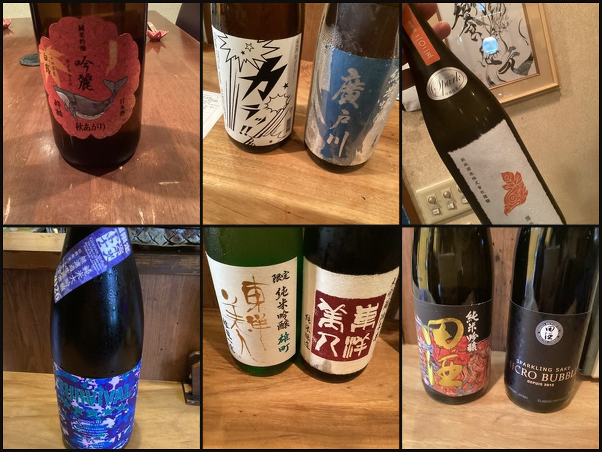

ABOUT
「元（はじめ）」から始まる、美食の新しい形。
店名の「饗応」には、心を込めて酒食でもてなすという意味を込めました。

CONCEPT
和食の伝統と、イタリアンで培った自由な発想。
和食の伝統を大切にしながらも、イタリアンで培った自由な発想をひと匙加える。それが饗応元の料理の考え方です。重厚な一枚板のカウンターと、静かに時を刻む鷹の佇まいが、凛とした空気をつくります。
14席という限られた空間だからこそ、お一人おひとりのペースや好みに寄り添い、最高の一献をご提案できると考えています。

SAKE SOMMELIER
「酒匠」が選ぶ、物語のある一杯。
「酒匠」の称号を持つ店主が、料理との相性をひとつひとつ考え抜いたうえで日本酒をセレクトしています。銘柄の知名度だけでなく、その日の料理・お客様の好みに合わせた一杯をご提案することを大切にしています。
「日本酒がたくさんある店」ではなく、「料理に合わせて酒匠が日本酒を選ぶ店」。それが饗応元らしさだと考えています。
OUR VALUES
饗応元が大切にしていること
目利きと熟成
店主自らが素材を目利きし、熟成のピークを見極めることで、素材本来の旨味を引き出します。
料理と一献のペアリング
単品の美味しさだけでなく、料理と日本酒の組み合わせが生む相乗効果を丁寧に設計します。
14席だけのおもてなし
限られた席数だからこそできる、目の届くきめ細やかなサービスを大切にしています。